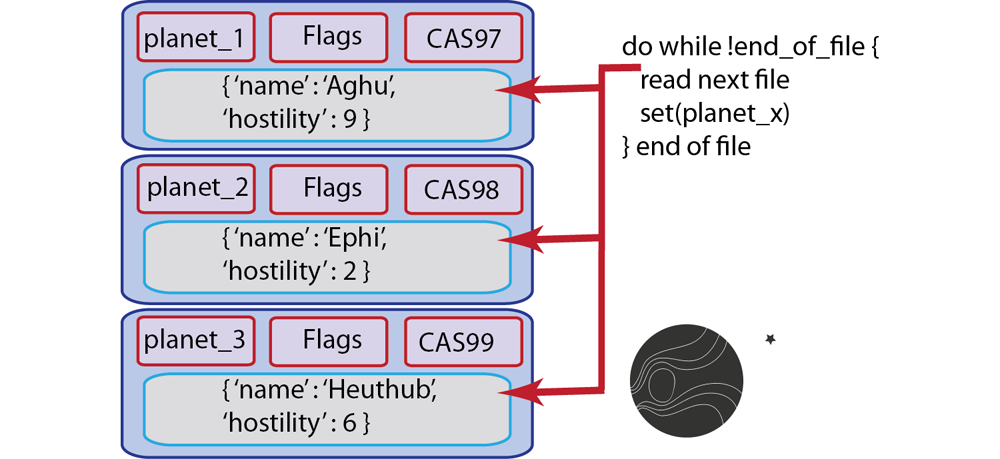
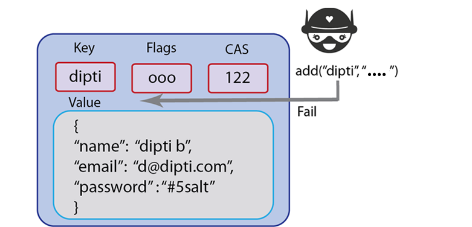

Storing information
These operations are used for storing information into Couchbase Server and consist of add and set. Both operations exist for all SDKs provided by Couchbase. For some languages, parameters, return values, and data types may differ. Unique behavior for these store methods that you should be aware of:
-
Expiration: By default all documents you store using set and add will not expire. Removal must be explicit, such as using delete. If you do set an expiration to the value 0, this will also indicate no expiration. For more information, see About document expiration.
-
CAS ID/CAS Value: For every value that exists in Couchbase Server, the server will automatically add a unique compare and swap (CAS) value as a 64-bit integer with the item. You can use this value in your implementation to provide basic optimistic concurrency. For more information, see Retrieving items with CAS values.
For existing keys, set will overwrite any existing value if a key already exists; in contrast add will fail and return an error. If you use replace it will fail if the key does not already exist.
The following storage limits exist for each type of information that you provide as well as the metadata that Couchbase Server automatically adds to items:
-
Keys: Can be up to 250 Bytes. Couchbase Server keeps all keys in RAM and does not eject any keys to free up space.
-
Metadata: This is the information Couchbase Server automatically stores with your value, namely CAS value, expiration and flags. Metadata per document is 60 bytes for Couchbase 2.0.1 and 54 for Couchbase 2.1.0. This is stored in RAM at all times and cannot be ejected from RAM.
-
Values: You can store values up to 1 MB in memcached buckets and up to 20 MB in Couchbase buckets. Values can be any arbitrary binary data or it can be a JSON-encoded document.
Be aware of key and metadata size if you are handling millions of documents or more. Couchbase Server keeps all keys and metadata in RAM and does not remove them to create more space in RAM. One hundred million keys that are 70 bytes each plus metadata at 54 bytes each will require about 11.2 GB of RAM for a cluster. This figure does not include caching any values or replica copies of data, if you consider these factors, you would need over 23 GB. For more information, see Sizing guidelines.
Set
set will write information to the data store regardless of whether the key for the value already exists or not. The method is destructive; if the key exists, it will overwrite any existing value. Typically you want to use set in cases where you do not care whether or not you overwrite an existing value, nor do you care if the key already exists or not. This method is similar to an INSERT statement in SQL.
For instance, if you have a player location document in a game, you might not care whether you overwrite the location with a new value; it is however important that you quickly create a location document if it does not already exist. In the case of this type of application logic, you might not want to waste any code to check if a player location exists; performing rapid read/writes of the player location and creating the initial score document may be more important than performing any checks in your application logic. In this case, using set would be suitable.
Another scenario is when you populate a database with initial values. This can be a production or development database. In this case, you are creating all the initial values for an entire set of keys. Since you are starting out with an empty database, and have no risk of overwriting useful data, you would use set here as well. For instance, if you are populating your new test database with documents that represent different planets, you could follow this approach:
Another scenario that is appropriate for using set is another scenario where you do not care about overwriting the last value for a key. For instance if you want to document the last visitor to your site, you would store that as a key and update it each time a new visitor is at your site. You might not care who the previous visitors are; in this case, you use set to overwrite anything that exists and replace it with the latest visit information.
This method is the functional equivalent of a RDMS commit/insert. Set will support the following parameters which are used during the operation:
-
Key: unique identifier for the information you want to store. This can be a string, symbol, or numeric sequence. A required parameter.
-
Value: the information you want to store. This can be in byte-stream, object, JSON document, or even string. A required parameter.
-
Options: this includes expiration, also known as TTL (time to live), which specifies how long the information remains in the data store before it is automatically flagged for removal and then deleted. You can also specify formatting options and flags.
The following shows a simple example of using set using the Ruby SDK:
c.set("foo", "bar", :ttl => 2)
This operation takes the key foo and sets the string ‘bar’ for the key which will expire after 2 seconds. This next example is part of a data loader script in PHP which reads in different JSON files in a specified directory. It then sends requests to write each file to Couchbase Server:
function import($cb, $dir) {
$d = dir($dir);
while (false !== ($file = $d->read())) {
if (substr($file, -5) != '.json') continue;
echo "adding $file\n";
$json = json_decode(file_get_contents($dir . $file), true);
unset($json["_id"]);
echo $cb->set(substr($file, 0, -5), json_encode($json));
echo "\n";
}
}
The first part of this function takes a Couchbase client instance as a parameter and a directory. It then assigns the directory to a local variable $d and opens it. The while loop will continue reading each file in the directory so long as we have not finished reading all the files. In the loop we detect if the file has the .json file type or not so we know to handle it, and store it. If the file is json we decode it, remove the attribute _id and then set the key as the filename with the other file contents as value. We choose this different key for better identification in our system. The following illustrates a sample JSON file which you can use with this loader:
{
"_id":"beer_#40_Golden_Lager",
"brewery":"Minocqua Brewing Company",
"name":"#40 Golden Lager",
"updated":"2010-07-22 20:00:20"
}
To view the complete loader application and sample data available on GitHub, see Couchbase Labs: Beer Sample
In Couchbase SDKs you can store a value with set while simultaneously providing a document expiration.
Set will return a boolean of true if it is able to successfully commit data to the databases; it can also return a CAS value, which is a unique identifier for the document, and is used for optimistic locking.
The associated memcached protocol in ASCII is set which stores a key. For more information, see memcached protocol
The types of errors that can occur during this operation include 1) inability to connect to a node, or 2) some error exists while attempting to format a value being set. If you have a connection-level error you may need to reattempt connection, and possibly check the status of the server. If you have an error with the size of your value or formatting, you need to check the value itself, and how it is encoded and see if there are any issues that make the document incompatible with Couchbase Server.
For more information about connections and connection-level settings, see Optimizing client instances and Client-side timeouts.
Add
add will also write information to the Couchbase Server, but unlike set, add will fail if the value for a given key already exists in Couchbase Server.
The reason you would want to use add instead of set is so that you can create a new key, without accidentally overwriting an existing key with the same name. For Couchbase Server, keys must be unique for every bucket; therefore when you commit new keys to Couchbase Server, using add may be preferable based on your application logic.
For example, if you create an application where you store all new users with a unique user name and you want to use user names as a keys, you would want to store the new key with add instead of set.
If a user already exists in your system with the unique username, you would not want to overwrite the user with a new user’s information. Instead, you could perform some real-time feedback and let the user know if the username has already been taken when the new user fills out their profile information. You can catch this type of error and report it back in your application when you use add to create the document.
Because add fails and reports an error when a key exists, some Couchbase Server developers prefer it to set in cases where they create a new document.
#stores successfully
c.add("foo", "bar")
#raises Couchbase::Error::KeyExists: failed to store value
#failed to store value (key="foo", error=0x0c)
c.add("foo", "baz")
This next example demonstrates an add in PHP:
$script_name=$_SERVER["SCRIPT_NAME"];
$script_access_count=$cb_obj->get($script_name);
if($cb_obj->getResultCode() == COUCHBASE_KEY_ENOENT){
#the add will fail if it has already been added
$cb_obj->add($script_name,0);
In this example we try to get a script name for the script that currently runs on our web application server. We then try to retrieve any script name that is already stored in Couchbase Server. If we receive a ‘key not found’ error, we add the script name to Couchbase Server.
In Couchbase SDKs you can store a value with add while simultaneously providing a document expiration.
The memcached protocol equivalent for this method is add. For more information about the underlying protocol, see memcached protocol
If you receive an unexpected ‘key exists’ error when you use add you should log the error, and then go back into your code to determine why the key already exists. You will want to go back into the application logic that creates these keys and find out if there is a problem in the logic. One approach to use to ensure you have unique keys for all your documents is to use a key generator that creates unique keys for all documents.
There are application scenarios where you receive a ‘key exists’ error and you want that error to occur so you can handle it in your application logic. For instance, if you are handling a coupon, and if the coupon key already exists you know the coupon code has already been redeemed. In that case you can use the error to trigger a message to the user that the coupon has already been used.
The types of errors that can occur during this operation include 1) inability to connect to a node, or 2) some error exists while attempting to format a value being set. If you have a connection-level error you may need to reattempt connection, and possibly check the status of the server. If you have an error with the size of your value or formatting, you need to check the value itself, and how it is encoded and see if there are any issues that make the document incompatible with Couchbase Server.
For more information about connections and connection-level settings, see Optimizing client instances Client-side timeouts.